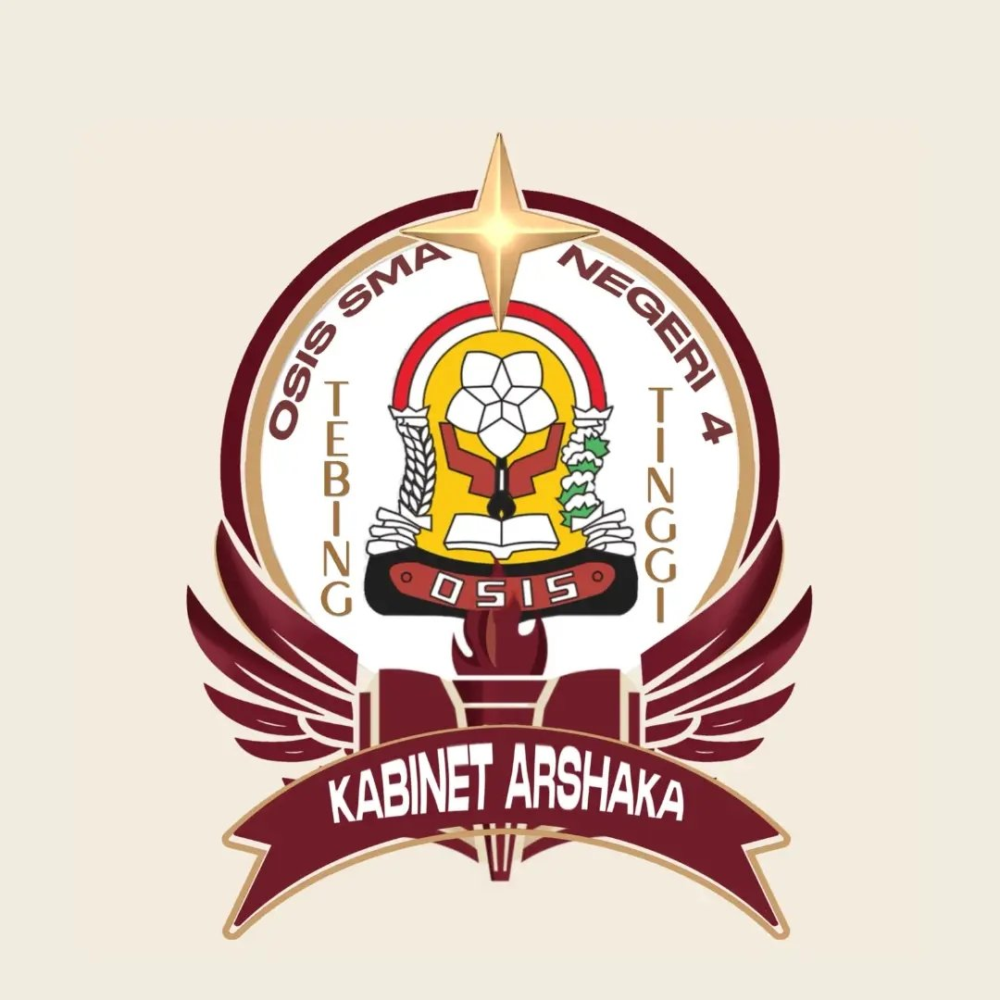
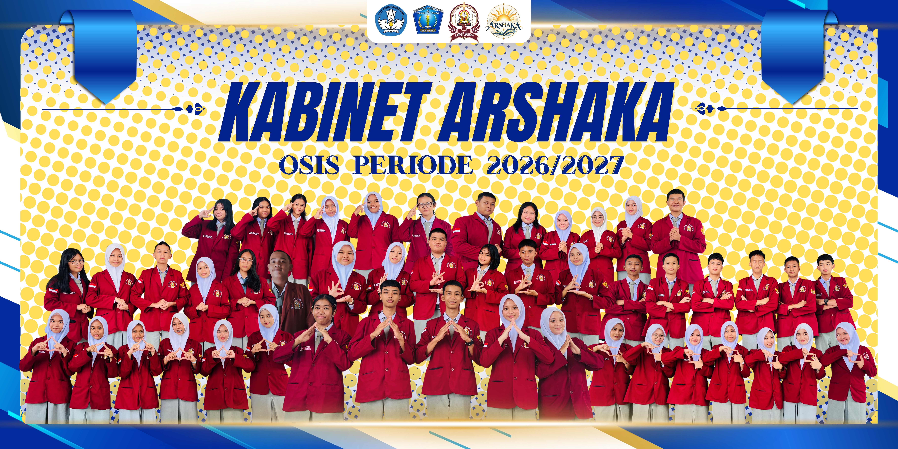

Sampaikan
Tuliskan ide atau masukan yang membangun.

Sampaikan saran, kritik, dan ide untuk menciptakan lingkungan sekolah yang lebih baik bersama OSIS.
Kirim Aspirasi →✓ Nama dan kelas boleh dikosongkan.

Setiap masukan berharga. Sampaikan aspirasi secara jelas, sopan, dan membangun.
Aspirasi tidak ditampilkan secara publik. Data hanya dapat dibaca oleh pengurus yang diizinkan.
Website ini membantu siswa menyampaikan masukan kepada OSIS dengan lebih mudah dan tertata.
Tuliskan ide atau masukan yang membangun.
Pengurus OSIS meninjau aspirasi yang masuk.
Aspirasi dibahas sesuai kebutuhan dan prioritas.